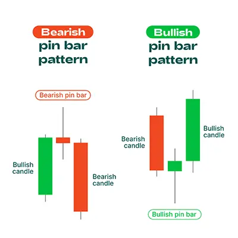

विक्री पैटर्न, पिन बार पैटर्न, एक ट्रेडिंग पैटर्न है जो बाजार की उच्च या निम्न दिशा का अंत और विपरीत दिशा का संकेत देता है।
यह पैटर्न एक लम्बे बॉडी और छोटी टेल से बना होता है। अगर बॉडी की लंबाई टेल की लंबाई से तिगुना या उससे अधिक होती है,
तो यह पैटर्न और अधिक प्रभावशाली होता है।